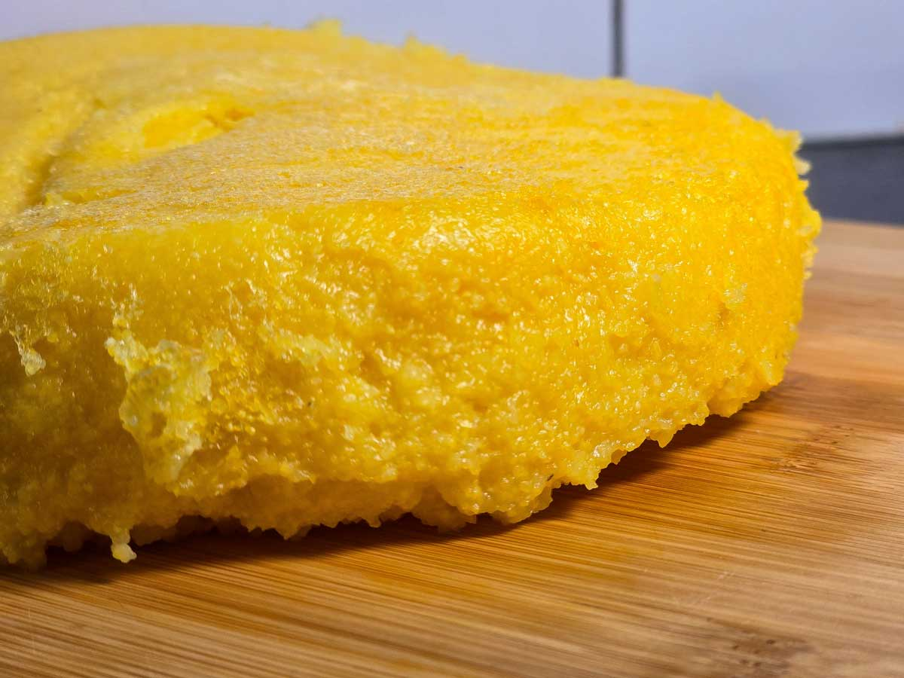

Mamaliga

Description
Mămăliga is the golden heart of Romanian cuisine, a versatile cornmeal porridge celebrated for its simplicity and comforting taste.
Traditionally cooked in a cast-iron kettle, its vibrant yellow hue and dense texture make it a staple of rustic dining.
Whether enjoyed soft with cold sour cream and cheese or sliced firm alongside hearty stews and sarmale, it remains a timeless symbol of authentic hospitality and traditional village life.
Ingredients
- 250 g cornmeal (or maize flour)
- 1 liter water
- 1 teaspoon salt
- Optional: one tablespoon of high-fat butter
Steps
- Boil the water in a large pot.
Add the salt and stir until it is completely dissolved.
- Once the water reaches a rolling boil, reduce the heat and sprinkle in the 250 grams of cornmeal,
stirring constantly to avoid lumps.
- Cook over low heat for about 20-25 minutes.
Stir continuously (or every 30 seconds) to prevent the mixture from sticking to the bottom.
- At the end, add the butter and keep stirring for 1-2 minutes until it is fully melted and incorporated.
- Turn off the heat and serve alongside cheese, sour cream, or dishes with gravy.